Hương vị miền Tây Nam Bộ
Trà Vinh là một tỉnh thuộc vùng Đồng bằng sông Cửu Long, nổi tiếng với văn hóa Khmer đặc sắc và ẩm thực phong phú, mang đậm hương vị miền sông nước. Nơi đây là sự giao thoa văn hóa giữa người Kinh, Khmer và Hoa, tạo nên nhiều món ăn và đặc sản rất riêng, khó lẫn với các địa phương khác. Một trong những đặc sản tiêu biểu nhất là bún nước lèo Trà Vinh – món bún có nước dùng đậm đà, được nấu từ mắm bò hóc của người Khmer, kết hợp với cá lóc, heo quay và các loại rau đồng. Hương vị vừa lạ vừa quen, thể hiện rõ bản sắc ẩm thực địa phương. Bên cạnh đó, dừa sáp Cầu Kè là loại dừa quý hiếm, có phần cơm dừa dày, dẻo và béo ngậy, thường được dùng để làm sinh tố hoặc ăn trực tiếp. Đây là một trong những đặc sản nổi tiếng nhất của Trà Vinh, được nhiều du khách tìm mua. Ngoài ra còn có bánh tét Trà Cuôn, một loại bánh tét truyền thống với nhân đậu xanh, thịt mỡ, trứng muối, được gói khéo léo bằng lá chuối, có hương vị thơm ngon và rất được ưa chuộng trong các dịp lễ Tết. Tổng thể, ẩm thực Trà Vinh không chỉ ngon mà còn phản ánh rõ nét đời sống văn hóa của vùng đất Trà Vinh – một điểm đến hấp dẫn cho những ai yêu thích khám phá ẩm thực miền Tây.
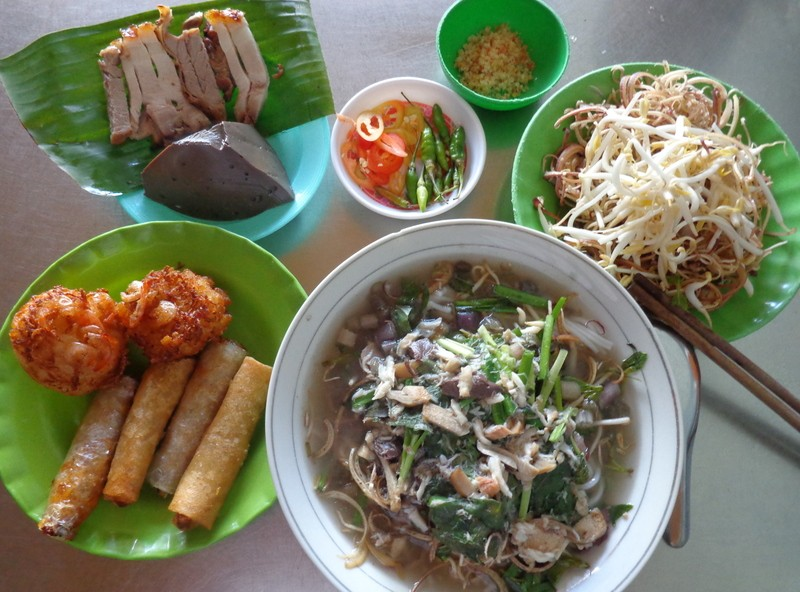
Bún nước lèo là một món bún nước dùng nổi tiếng của miền Tây Nam Bộ Việt Nam, đặc biệt gắn với Sóc Trăng.
Đặc điểm của món này:
Nước lèo được nấu từ mắm bò hóc (một loại mắm của người Khmer), tạo hương vị đậm đà đặc trưng. Thường ăn với bún tươi, cá lóc, tôm, đôi khi có thịt heo quay. Ăn kèm nhiều loại rau sống như bắp chuối bào, giá đỗ, hẹ, rau muống bào, rau thơm. Vị nước dùng thường thanh ngọt từ xương và hải sản nhưng vẫn có mùi thơm đặc trưng của mắm.
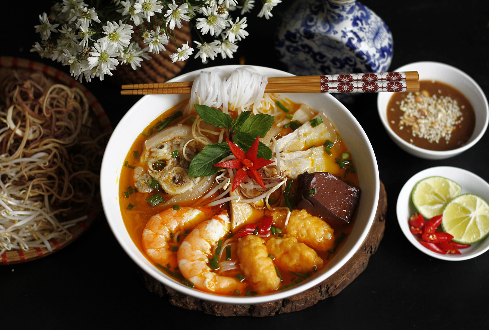
Bún suông là một trong những món ăn đặc trưng của Trà Vinh, mang đậm nét văn hóa ẩm thực của cộng đồng người Khmer Nam Bộ. Điểm nổi bật của món ăn nằm ở phần "suông" được làm từ tôm tươi xay nhuyễn, quết cùng gia vị rồi nặn thành từng thanh dài trước khi thả vào nước dùng.
Nước dùng được ninh từ xương heo kết hợp với tôm khô nên có vị ngọt thanh tự nhiên. Khi thưởng thức, bún thường ăn kèm giá đỗ, hẹ, rau muống bào, rau thơm và nước mắm ớt. Món ăn có vị ngọt của tôm, hương thơm dịu và rất được du khách yêu thích khi đến Trà Vinh.
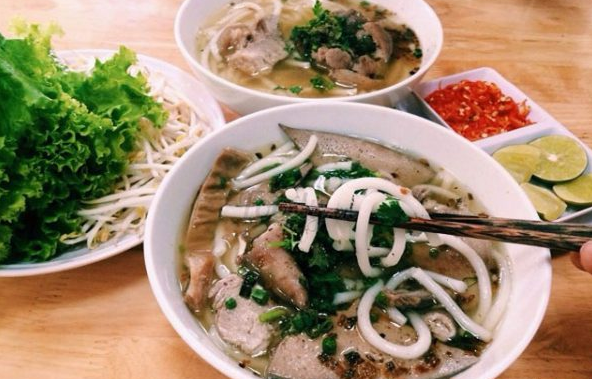
Bánh canh Bến Có là đặc sản nổi tiếng của xã Bến Có, huyện Châu Thành, tỉnh Trà Vinh. Món ăn được chế biến từ sợi bánh làm bằng bột gạo pha bột năng nên vừa mềm vừa dai.
Nước dùng được ninh từ xương heo trong nhiều giờ tạo vị ngọt tự nhiên. Một tô bánh canh thường có giò heo, thịt nạc, huyết, hành lá và tiêu. Khi ăn có thể dùng kèm giá sống, chanh và nước mắm ớt để tăng thêm hương vị.
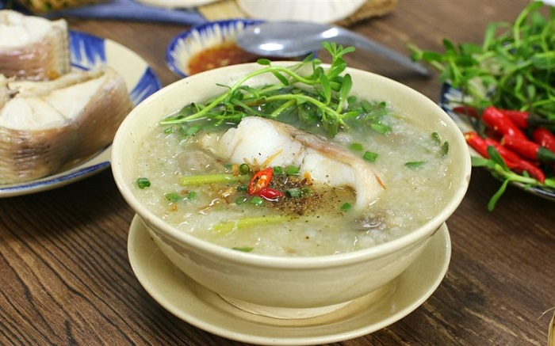
Cháo ám là món ăn truyền thống của người Khmer ở Trà Vinh. Gạo được rang vàng trước khi nấu cùng cá lóc đồng nên tạo nên hương thơm rất đặc trưng.
Cá lóc được luộc chín, gỡ lấy thịt rồi xào cùng hành tím và gia vị trước khi cho vào cháo. Khi ăn thường rắc thêm hành lá, tiêu xay và ăn kèm rau thơm. Món ăn có vị ngọt tự nhiên, dễ ăn và giàu dinh dưỡng.
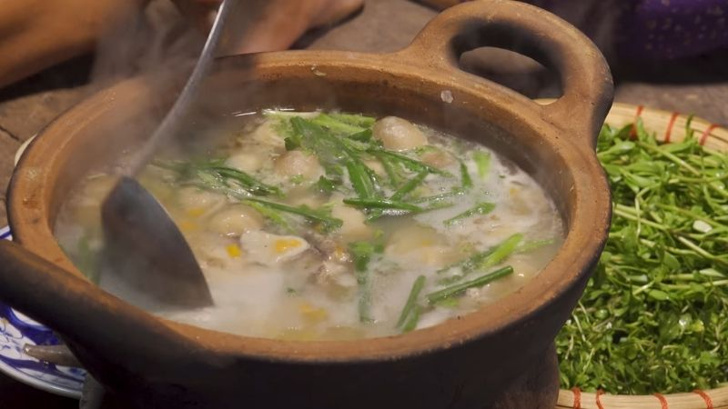
Cháo cá khoai là món ăn dân dã phổ biến ở vùng ven biển Trà Vinh. Cá khoai có thịt mềm, ngọt và rất ít xương nên được nhiều người yêu thích.
Cháo được nấu cùng gạo thơm, hành tím phi và gừng để khử mùi tanh. Khi ăn sẽ thêm tiêu xay, hành lá và rau thơm giúp món ăn thơm ngon hơn. Đây là món ăn thích hợp cho bữa sáng hoặc những ngày mưa.
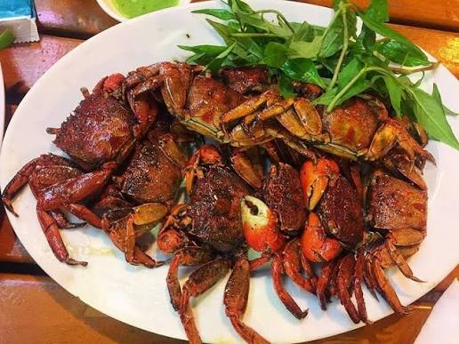
“Chù ụ rang me” là món đặc sản khá quen ở miền Tây, làm từ con chù ụ (một loài cua/càng nhỏ sống vùng bãi bùn, thường gặp ở Cà Mau – Bạc Liêu).
điểm đặc biệt của món này:
Chù ụ rang me: dùng chù ụ tươi sống ở vùng bãi bùn miền Tây, thường được sơ chế sạch rồi chiên sơ để giữ độ giòn. Sốt me được nấu từ me chín, tạo vị chua ngọt đậm đà đặc trưng. Hương vị đặc trưng: kết hợp giữa vị chua thanh của me, vị mặn ngọt của nước mắm đường và vị béo nhẹ từ phần gạch và thịt chù ụ.Trải nghiệm ăn uống: món ăn mang vị chua – ngọt – cay hài hòa, ăn kèm cơm nóng hoặc làm món nhậu đều rất hợp, tạo cảm giác dân dã nhưng đậm đà khó quên.
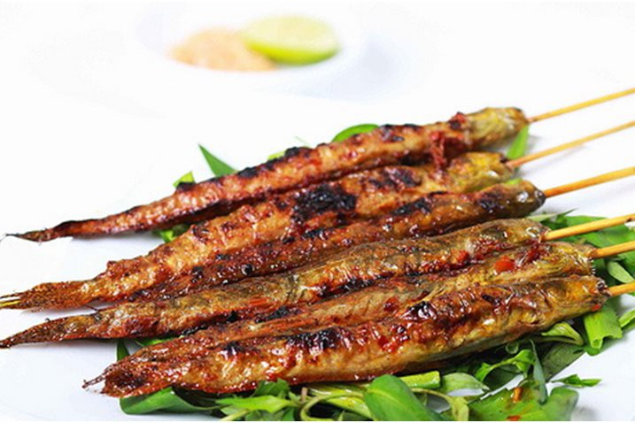
Cá loi choi là loài cá sống nhiều ở vùng nước lợ ven biển Trà Vinh. Cá được làm sạch rồi ướp cùng sả, tỏi, ớt, nước mắm và các loại gia vị trước khi nướng trên than hồng.
Sau khi nướng, lớp da cá vàng giòn, thịt thơm và vẫn giữ được vị ngọt tự nhiên. Món ăn thường được dùng cùng rau sống, bánh tráng và nước chấm chua ngọt hoặc muối tiêu chanh.
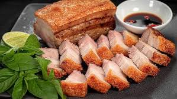
Heo quay Trà Vinh là món ăn nổi tiếng của cộng đồng người Khmer Nam Bộ. Heo được tẩm ướp với nhiều loại gia vị như tỏi, tiêu, ngũ vị hương và quay bằng than củi.
Thành phẩm có lớp da vàng giòn, thịt mềm và thơm. Đây là món ăn thường xuất hiện trong các dịp lễ hội, cưới hỏi và Tết Chol Chnam Thmay của người Khmer.
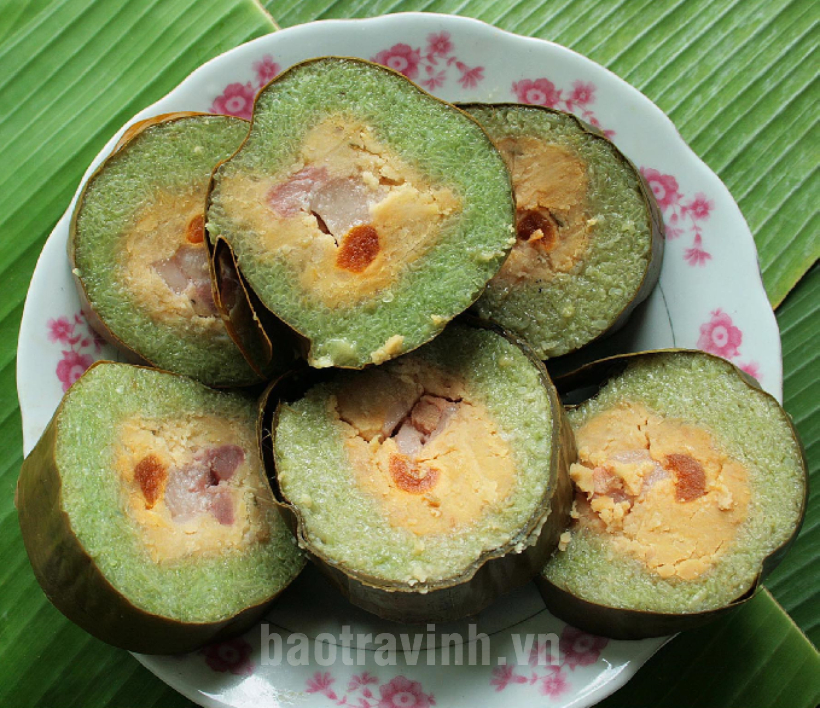
Bánh tét Trà Cuôn là một loại bánh tét nổi tiếng của vùng Trà Cú – Trà Vinh, đặc biệt được nhiều người miền Tây xem như món bánh truyền thống không thể thiếu dịp lễ Tết.
Đặc điểm nổi bật:
Nếp dẻo thơm: dùng nếp ngon, thường được ngâm lá dứa hoặc nước tro để tạo màu và mùi thơm nhẹ Nhân mặn đặc trưng: gồm thịt heo ba rọi, đậu xanh, trứng muối Gói bằng lá chuối: buộc chặt thành đòn dài, sau đó luộc nhiều giờ Vị béo – mặn – ngọt hài hòa, ăn không ngán dù khá nhiều đạm.
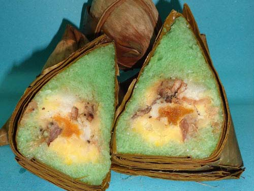
Bánh được làm từ nếp dẻo với nhân đậu xanh hoặc thịt heo.
Hương thơm đặc trưng từ lá gói truyền thống.
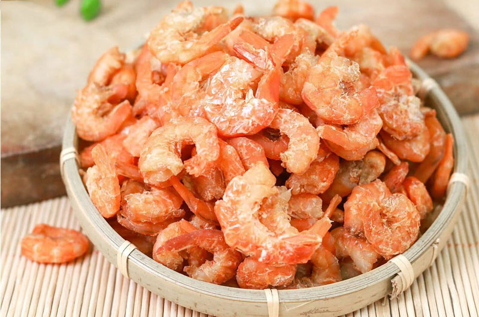
Tôm được chế biến từ nguồn nguyên liệu tươi ngon tự nhiên.
Là món quà đặc sản được nhiều người lựa chọn.
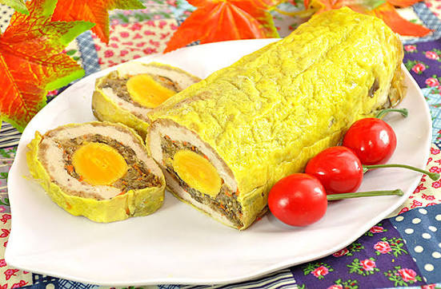
Chả được làm từ thịt heo và trứng muối.
Khi cắt ra có hình dạng như bông hoa đẹp mắt.
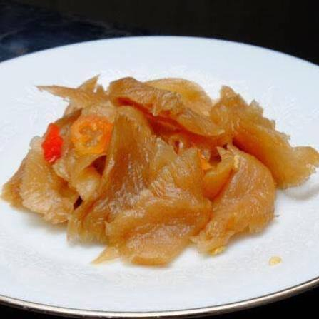
Được chế biến theo phương pháp truyền thống.
Vị mặn ngọt hài hòa, thường dùng trong món kho.
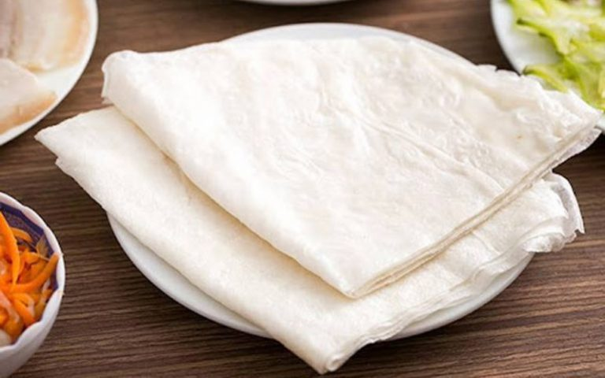
Bánh tráng được làm từ gạo ngon của địa phương.
Có thể dùng để cuốn hoặc nướng giòn.
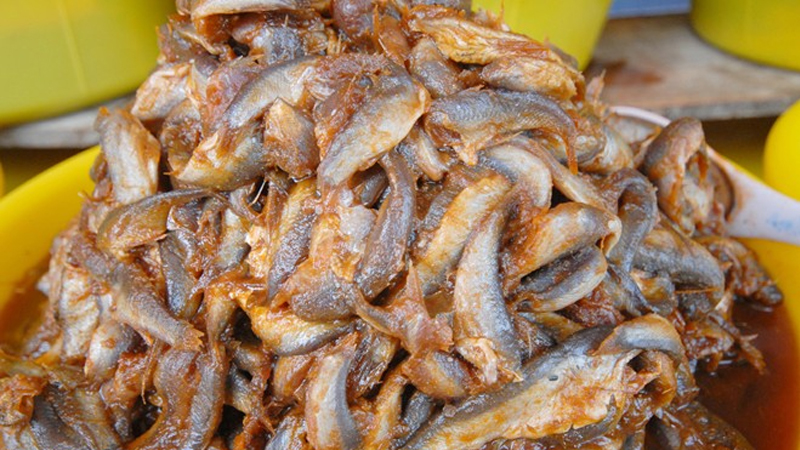
Mắm bò hóc (còn gọi là prahok trong tiếng Khmer) là một loại mắm cá lên men rất đặc trưng của cộng đồng Khmer ở Nam Bộ, Việt Nam và Campuchia.
Đặc điểm hương vị:
Làm từ cá ủ muối lên men tự nhiên trong thời gian dài Là gia vị “linh hồn” của ẩm thực Khmer và miền Tây Nam Bộ Có mùi rất mạnh, nhưng khi nấu chín lại tạo hương thơm đặc trưng Tạo vị umami đậm sâu, giúp món ăn ngọt nước hơn mà không cần nhiều gia vị khác Không dùng để ăn riêng nhiều, chủ yếu dùng làm nền nấu như bún nước lèo, canh, lẩu.
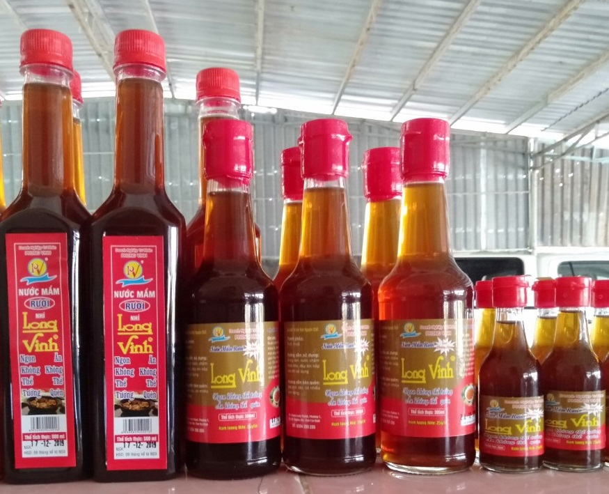
Loại nước mắm truyền thống được sản xuất từ rươi tự nhiên.
Hương vị đậm đà, đặc trưng vùng ven biển Trà Vinh.
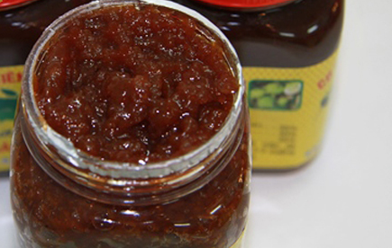
Được làm từ trái bần của vùng đất ngập mặn.
Có vị chua ngọt độc đáo, thích hợp làm quà.
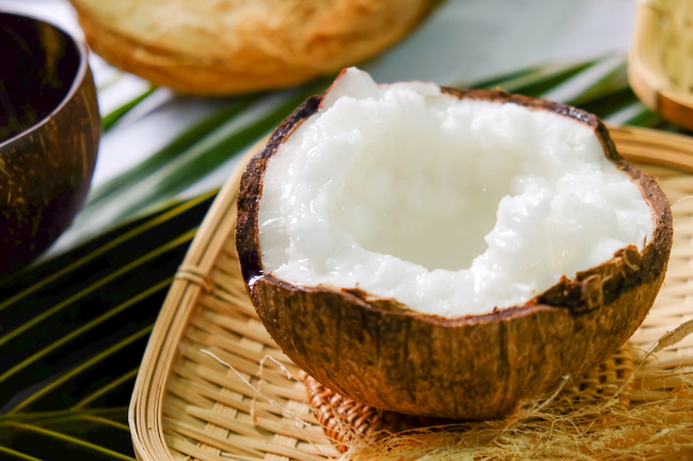
Dừa sáp là một loại dừa đặc biệt và rất hiếm ở Việt Nam, nổi tiếng nhất ở vùng Cầu Kè – Trà Vinh.
Điểm đặc biệt của dừa sáp:
Cơm dừa dày, dẻo và “sáp” (giống như kem đặc), không cứng như dừa thường Nước dừa rất ít hoặc gần như sệt, có quả gần như không có nước Mùi thơm béo, vị ngọt nhẹ, ăn rất “ngậy” Không phải trái nào trên cây cũng là dừa sáp — thường chỉ một phần nhỏ cho ra “sáp”.
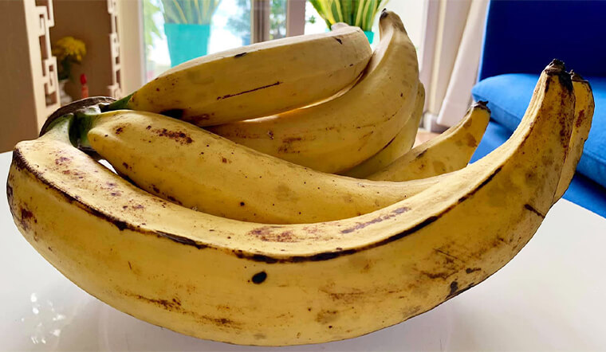
Giống chuối nổi tiếng với kích thước lớn.
Thịt chuối dẻo, thơm và ngọt đậm.
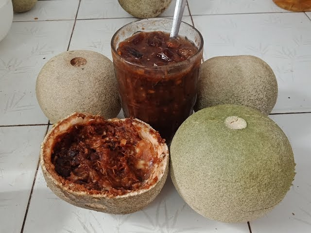
Loại trái cây đặc sản gắn liền với văn hóa Khmer Trà Vinh.
Thường dùng làm sinh tố, nước giải khát hoặc dầm đường.